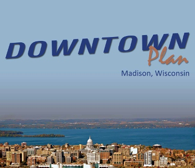

Madison has made it clear that it wants an economically and culturally vibrant downtown through its recently-adopted
Downtown Plan, as well
as other plans in the works. Great cities magnify their greatness through well run, fully funded transit systems.
Paris would not have the density of culture without the Metro. Portland wouldn't be the hippest city on the continent
without its strong transit system interlinked with livable land use planning.
Our concern is that Madison's plans, weak on transit as they are, will slow our efforts to build a world class city.
The Downtown Plan informs us, erroneously, that suboptimal transit service is “excellent” (p.74) and that we should continue the cars-as-usual situation in which “nearly 70% of Downtown workers get to their jobs by car” (p.71).
The plan specifies that we should facilitate car parking to the max, including (apparently) stalls that can rival the cost
of some homes in Madison. Yet there appears to be no recognition that underground stalls especially, can be so
costly.
The Downtown Plan received media attention regarding such issues as the gentrification of neighborhoods, height limits, and planned lake fill but overlooked transportation. This is a serious
shortcoming given that the plan is supposed to guide development for the next 20 years or so.
We think there is a better way. A way that includes transit as the centerpiece of getting around Madison, starting with
downtown.
But nothing will change as long as Madison“s city bureaucracy is maximally siloed. The “planning team” does not
include transit, parking, streets, parks, water, or engineering. Meanwhile, the city's “public works and transportation”
team does not include planning, development, or building inspection. State of the art urban planning recognizes the
close relationship between land use and transportation. Even at the federal level departments of Transportation
(DOT), Housing and Urban Development (HUD), and the Environmental Protection Agency (EPA) are working
together to promote sustainable communities.
Madison's structure is reminiscent of 1950s governmental structures resulting in the destruction of viable
neighborhoods in the name of highway expansion. (A recent example here being the Verona Road expansion fiasco.)
Indeed, entire blocks of downtown Madison are making way for apartment complexes where car accommodation
is the primary concern. The main casualty: the death of a vibrant street life. Classic porches and yards give way to gigantic driveways to cavernous underground parking. Say goodbye to saying hello to your neighbor.
Unfortunately, it has been just that kind of lack of vision that has pulled Madison down for the last 50 years or so.
We’ve seen the gradual erosion of human-scaled downtown amenities -- the very things that make city living
attractive. The mistake is in trying to appeal to a suburban mindset by making Downtown
West Towne. The classic, pedestrian-friendly feel of old city neighborhoods is actually an asset to be banked, not
bulldozed.
Fortunately, there are other visions for how downtown Madison might look in 20 years; some modeled after what
people have seen in the great cities of the world. Downtowns should be alive with people walking and biking, taking
transit day and night. Activity should be so bustling that car travel is less attractive than being a part of a lively city
scene.
We should pay close attention to the trends of car ownership and driving frequency among people under 25. They are
owning cars at significantly lower rates than their parents (so much so that Detroit is getting worried). The graybeards
in charge need to be mindful that the young, bright lights do not see a car as central to their personhood. They've got
better things to do and better ways of spending their money.
Instead of 70 percent of downtown workers getting to their jobs by car, we should aim to reverse that figure (or even
better). Let's attract the people who are innovating, not driving around looking for a parking space. Not only should a
good plan enhance pedestrian and bicycle facilities, but it should propose a truly “excellent” transit service with rapid
and frequent schedules connecting downtown to all parts of the city.
A good mechanism for helping achieve minimal single cccupancy vehicle travel for commuters who work downtown
was tacked on to the end of the Plan’s Key 6: That employers downtown develop Transportation Demand Management (TDM)
strategies “designed to encourage travelers to use alternatives to driving alone, especially at the most congested times
of the day” (p. 89). It tells us that TDM strategies include some combination of “alternative” transportation options
(such as ride sharing, transit, bicycling, or walking), telecommuting, preferential parking for ride sharers, and
guaranteed ride home programs. “There is no one set program, and each major employer should develop a TDM that
works best for their organization and employees” (p.89).
We emphasize that an important element in any Transportation Demand Management (TDM) program is how it deals
with parking in relation to everything else – whether it is the provision of good parking accommodations for bicycles,
whether it involves the preferential allocation of valuable parking spaces to carpooling or van pooling vehicles,
whether it makes flex parking much more reasonable than full-time parking for cars, or whether it is some kind of
“parking cashout” program in which employers who provide subsidized parking for their employees offer a cash
allowance in lieu of a parking space.
Our vision is of a downtown alive with people walking and biking, taking transit day and night -- so bustling that car
travel is less attractive than being a part of a lively city scene.
 Madison Area Bus Advocates
Madison Area Bus Advocates